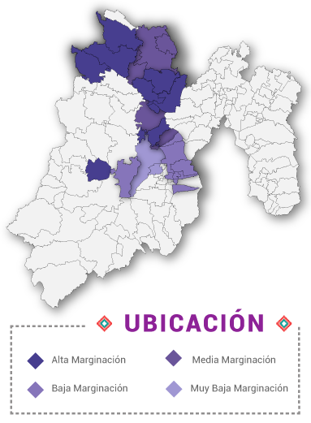
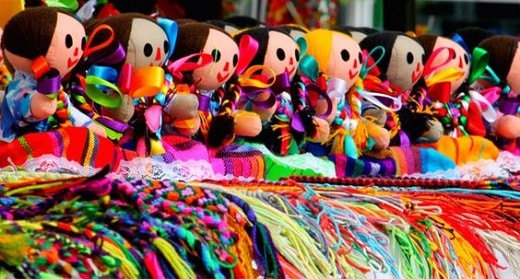
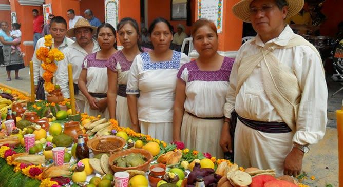
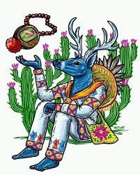

El papel de los otomíes en la prehistoria y la historia antigua de México fue mayor de lo que generalmente se cree. Una mirada atenta al pasado de este grupo nos obliga a revalorar su contribución al desarrollo de la cultura plurilingüística de los antiguos habitantes del Altiplano Central. Los otomíes son de origen muy antiguo, y se les relaciona estrechamente con los olmecas.
Estos llegaron al altiplano procedentes del oriente o del sur de las costas del Golfo de México; ocuparon un área territorial muy extensa que comprendía la región noroeste del Estado de México, gran parte de Hidalgo y algunas porciones de los estaos de Guanajuato, Querétaro, Michoacán, Puebla, Veracruz, Morelos y Tlaxcala. Después de sucesivas emigraciones se establecieron en el lugar donde posteriormente los toltecas fundarían Tula, que fue la capital de su imperio y a su caída a manos de los chichimecas, al mando de Xólotl los otomíes se dispersaron y una fracción se desplazó hacia la zona de Jilotepec, Chapa de Mota y áreas colindantes.

La principal actividad económica del pueblo otomí se basa en el cultivo de maíz, frijol, haba, trigo y avena; así mismo, del maguey, el cual tiene doble propósito como delimitador de los terrenos de la viviendas indígenas y extracción del aguamiel para producir pulque. La ganadería y la avicultura son actividades secundarias, pues se practican a nivel de tras patio y solamente cuentan con pequeños hatos de ovejas y cabras; engorda de cerdos, cría de gallinas y guajolotes.
La economía familiar se complementa con la elaboración de artesanías la cual ha sido una práctica ancestral entre los otomíes, quienes a través de las formas, figuras y colores plasman y transmiten su visión de la naturaleza, vida cotidiana, cosmos y sentimientos, constituyendo una parte importante de su cultura e identidad étnica. La gama artesanal es variada, así como los materiales: tapetes de lana anudados a mano, metates y molcajetes de piedra negra, ollas, jarros, cazuelas, comales, sahumerios y candeleros de barro, sombreros y bolsas de paja y popotillo, canastas de mimbre y tejidos de lana como chincuetes, fajas, sarapes, gabanes y colchas.

El vestido de la mujer otomí, consiste en un chincuete o “enredo” de lana muy amplio y largo de color azul marino o negro, con líneas verdes, anaranjadas y amarillas; y una blusa de popelina de color blanco, manga corta con bordados en motivos florales, faunísticos o geométricos, o bien una combinación de ellos. Es característico de la indumentaria otomí el uso del quexquémetl, que puede ser de algodón, lana o artícela en varios colores. Por su parte, los hombres frecuentemente usan una camisa bordada a los lados del pecho y en los puños de las mangas, combinados con coloridos y un sombrero de paja, asimismo, con un corte de cabello muy particular conocido como piochtli, en el que se rapan la cabeza dejándose pocos pelos en la nuca.

Un mito es una narración irrealista protagonizada por dioses, héroes o personajes fantásticos, ubicada fuera del tiempo histórico, que explica determinados hechos o fenómenos y forman parte del sistema de creencias de un pueblo o cultura.
Ofrecen explicaciones sobre el origen del mundo, de los dioses, del hombre en la Tierra, de la fundación de las culturas y las naciones, de los seres, las cosas, las técnicas y las instituciones, así como sobre el origen del bien y el mal y relatos asociados con la idea del fin del mundo.
Una leyenda es un relato que se transmite por tradición oral, el cual combina elementos reales con elementos imaginarios o maravillosos, enmarcados en un contexto geográfico e histórico concreto y las leyendas están íntimamente relacionadas con la cultura y tradiciones locales, de allí que suelen incluir elementos afines a una comunidad o localidaden particular y sus principales son:
• Se transmiten de forma oral o escrita.
• Tienen un componente de realidad.
• Suelen tener un componente fantástico.
• Sus personajes son representaciones de arquetipos.
• Son creaciones anónimas.
Sin embargo, el mito y una leyenda no son lo mismo ya que el mito trata de explicar el origen del mundo con pretensiones históricas, tiene dioses o seres fantásticos y no siempre tiene algún elemento real; mientras que las leyendas tienen origen de algún elemento de la naturaleza, no se ubican en un momento preciso, habla sobre personas humanas, si tiene elementos reales.

--> "El Nahual."
--> "La Hacienda."